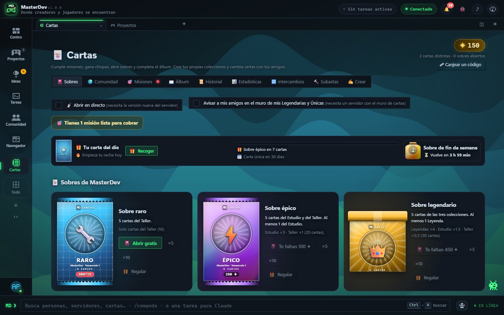
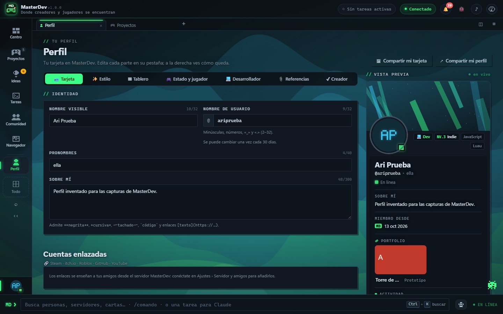

Para jugadores
Juega antes que nadie y deja tu huella
En MasterDev los juegos los hacen personas reales que quieren saber qué opinas. Pruébalos, cuéntales qué pasó y ve cómo cambian con lo que dijiste.
Con un servidor
Descubrir y playtests
- Juegos publicados por desarrolladores reales, con reseñas, etiquetas y playtests abiertos.
- Mientras juegas, marca momentos («aquí me perdí», «esto mola») y responde encuestas cortas.
- Te avisa cuando arreglan el bug que encontraste.
- Compartir cómo jugaste una partida es opcional: lo decides en cada playtest.
«Me quedé atascado en la segunda sala: no vi la palanca.»
Una nota de playtest así es oro para quien hace el juego.
Disponible
Cartas coleccionables
- Sobres de bienvenida y misiones del día y de la semana.
- Completa colecciones y crea las tuyas, también de tu propio juego.
- Los intercambios con otras personas necesitan un servidor.

Disponible
Tu perfil, tus temas, tu música
- Perfil con foto, banner, tablero y tus juegos favoritos.
- 12 temas con fondos animados, o tus propios colores e imagen.
- Mi música, con un modo a pantalla completa y un mini reproductor.

Disponible
Graba, juega y búscalo todo
- Ctrl + Alt + G graba tu partida con el sonido del PC y tu micro en pistas aparte; exporta para Discord, YouTube, GIF o WebM.
- Al abrir un juego, tu estado pasa a «Jugando a …». Modo juego opcional, FPS y temperaturas en vivo, y pruebas de reacción y de red.
- Ctrl + Mayús + F busca en tus capturas (también su texto), clips, historial, marcadores y tareas, con #etiquetas y filtros.
Todo se graba y se busca en tu PC: nada sale de él si no lo compartes.
Disponible
Un navegador más tuyo
- Renombra y apila tus pestañas, ponles caducidad y velas todas con miniaturas en la Pizarra.
- Escribe «20 usd en eur» o «hora en Tokio» en la barra y sale la respuesta; busca en todas tus pestañas a la vez.
- Escudo contra anuncios y rastreadores, contenedores para tu segunda cuenta y Discord o Spotify en un panel al lado.
- Trae tu historial y tus marcadores de Edge, Chrome u Opera GX.
El escudo, el historial y los contenedores se quedan en tu PC.
Disponible
Tus capturas y clips, de cualquier juego
- Ctrl + Alt + S captura el juego que tienes delante, con retardo, de una zona o de una ventana. Las capturas de Steam, la Barra de juego, NVIDIA y OBS llegan solas a la Galería, ordenadas por fecha y por juego.
- Graba con tu cámara en una esquina o en vertical, y enciende la repetición para guardar lo que acaba de pasar con Alt + F10.
- Edita con capas, pegatinas y filtros retro, haz un GIF o recorta un clip y comprímelo a 8, 25 o 50 MB para Discord.
- Mándalo a Discord, cópialo listo para pegar en el chat o crea un enlace que caduca. Destaca tu mejor clip en tu perfil y mira tu Galería en el móvil con un QR.
Al compartir, MasterDev quita la ubicación y tu nombre de usuario de cada foto.
Disponible
Tu música, a otro nivel
- Un ecualizador de 10 bandas (para una canción, una lista o tus auriculares), velocidad sin cambiar el tono, tu propia salida de audio y la música que baja sola cuando hablas en una llamada.
- Las teclas multimedia, el panel de volumen de Windows y la pantalla de bloqueo con la portada. Al volver, la canción sigue donde la dejaste.
- Álbumes, listas inteligentes y en carpetas, sin tope; quitar duplicados, reconocer canciones sin nombre, vetar las que no quieres en el aleatorio y una papelera de 7 días.
- Una sola búsqueda en tu biblioteca, YouTube y SoundCloud, pódcast que siguen donde los dejaste y un mini reproductor con tres formas que se queda encima del juego.
- Comparte una canción en el chat, haz una mezcla con un amigo, escuchad en un canal de música del servidor, enseña tu top del mes en el perfil y lleva tu música al móvil por la wifi de casa.
¿Haces directos? El modo directo solo pone canciones que puedes emitir.
Disponible
Tus cuentas, conectadas
- Tu estado de Discord enseña el juego que tienes abierto o la canción que suena, con su portada. Invita a tus amigos de Discord con un enlace y se harán tus amigos en MasterDev.
- Spotify en el reproductor y en el mini, trae tus listas de Spotify o YouTube y apunta lo que escuchas en Last.fm.
- Mira quién está en directo en Twitch, con un aviso cuando empiezan tus streamers, y quién está jugando ahora a cada juego.
- Tus horas y logros de Steam en tu perfil y el porcentaje de logros de cada juego en tu lista.
Tus claves se guardan cifradas en tu PC y nada se publica sin que lo digas.
Disponible
Todos tus juegos, en un sitio
- Steam, Epic, GOG, Xbox, Roblox, Minecraft, tus .exe y tus juegos retro con tu emulador en una cuadrícula de portadas con ▶ Jugar, estanterías, tus horas de todas las tiendas juntas y «¿A qué juego ahora?».
- Copias de tus partidas con fecha (a Drive o a una carpeta tuya) y mods por perfiles. Solo con el juego cerrado, siempre con copia previa y con «Deshacer».
- Una capa encima del juego con chat, notas, cronómetro de speedrun, rendimiento y sonido; tu mando, tus luces RGB y el volumen del juego, que vuelven a como estaban al cerrarlo; y un modo sofá para jugar con el mando.
MasterDev no mete nada dentro de tus juegos: la capa es una ventana aparte.
Con un servidor
Juega con tus amigos
- Quién está jugando ahora (también tus amigos de Steam), buscar grupo, invitar a tu partida con un enlace, noches de juego con votación, retos y clubes de cada juego.
- Mira la partida de un amigo (solo la ventana del juego, con su permiso), juega a un juego local a distancia con tu mando, pásale una partida o un mod y recomiéndale juegos en el chat.
- Tus amigos solo ven lo que enciendes: todo viene apagado de serie.
Un enlace y tu amigo entra en tu partida, sin puertos ni IP.
Disponible
Descubre qué jugar y recuerda lo jugado
- «Para ti» aprende de tus horas, una sola lista de deseos con el mejor precio y el mínimo histórico (con IsThereAnyDeal), lo gratis de la semana, Game Pass, lanzamientos con recordatorio y las noticias de tus juegos.
- Todos tus logros en una línea de tiempo, carreras de logros con amigos, un diario de lo que terminas, metas con rachas, cartas que se ganan jugando, tu top 10 y «Tu año jugando».
Y un clip guardado solo cuando consigues un logro.
Llamadas: solo red local
Amigos de verdad
- Amigos, mensajes y grupos con imágenes. Siempre personas reales, nunca una IA.
- Servidores con canales, como en las apps de chat que ya conoces.
- Llamadas y compartir pantalla, por ahora dentro de la misma red.
Presencia como en Discord: en línea, ausente, no molestar o invisible, con tu estado.